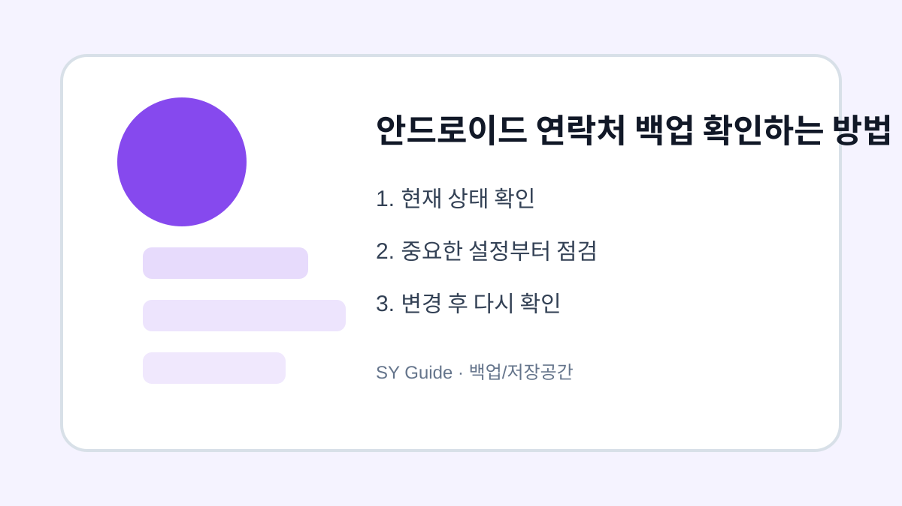

안드로이드 연락처 백업 확인하는 방법
안드로이드 연락처가 Google 계정에 저장되어 있는지 확인하고 기기 변경 전에 안전하게 백업합니다.

연락처는 평소에는 잘 보이지 않지만 잃어버리면 가장 불편한 자료입니다. 특히 예전 스마트폰에서 기기 저장소에만 저장된 연락처는 새 기기로 바꿀 때 빠질 수 있습니다. 기기 변경 전에는 연락처 저장 위치와 동기화 상태를 꼭 확인해야 합니다.
저장 위치 확인하기
연락처 앱에서 각 연락처가 Google 계정, 삼성 계정, 기기 중 어디에 저장되어 있는지 확인합니다. 계정에 저장된 연락처는 새 기기에 로그인하면 복원되기 쉽지만, 기기 저장 연락처는 따로 이동해야 합니다.
동기화 상태 점검
설정의 계정 메뉴에서 Google 계정 동기화가 켜져 있는지 확인합니다. 연락처 동기화가 꺼져 있으면 새로 저장한 번호가 계정에 올라가지 않을 수 있습니다. 와이파이 연결 후 동기화를 한 번 실행하면 더 안전합니다.
| 저장 위치 | 장점 | 주의할 점 |
|---|---|---|
| Google 계정 | 기기 변경 편리 | 동기화 필요 |
| 기기 저장 | 오프라인 보관 | 분실 시 위험 |
| SIM 저장 | 단순 이동 | 정보 제한 |
삭제하거나 옮기기 전 마지막 확인
- 연락처 저장 위치 확인하기
- 기기 저장 연락처를 계정으로 이동하기
- Google 연락처 동기화 켜기
- 웹 연락처에서 실제로 보이는지 확인하기
- 기기 초기화 전 새 기기에서 연락처 열어보기
연락처 백업은 몇 분이면 확인할 수 있지만, 놓치면 복구가 어렵습니다. 새 스마트폰을 사기 전이나 가족 기기를 정리할 때 가장 먼저 점검해두세요.
연락처 백업 실제 상황 예시
연락처 백업 관련 문제는 대부분 한 가지 메뉴만으로 해결되지 않습니다. 알림, 권한, 저장공간, 계정 상태처럼 여러 설정이 연결되어 있기 때문에 현재 상태를 먼저 확인하고 하나씩 바꾸는 방식이 안전합니다. 이렇게 하면 어떤 변경이 실제로 효과가 있었는지도 파악하기 쉽습니다.
연락처 백업에서 피해야 할 실수
실수는 대개 급하게 처리할 때 생깁니다. 저장공간이 부족하다고 바로 삭제하거나, 보안이 걱정된다고 모든 권한을 꺼버리면 필요한 기능까지 멈출 수 있습니다. 변경 전후를 비교하고, 중요한 자료나 계정은 공식 도움말을 확인한 뒤 진행하는 것이 좋습니다.
연락처 백업 관련 설정을 먼저 확인해야 하는 이유
연락처 백업 관련 설정은 단순히 메뉴 하나를 켜고 끄는 문제가 아니라, 실제 사용 흐름에서 어떤 불편을 줄이려는지 먼저 정해야 합니다. 같은 메뉴라도 기기 제조사, 운영체제 버전, 앱 업데이트 상태에 따라 이름이 달라질 수 있으므로 현재 화면을 기준으로 차근차근 확인하는 것이 좋습니다.
연락처 백업에서 자주 생기는 실수
많은 사용자가 바로 삭제하거나 초기화하는 방식으로 문제를 해결하려 하지만, 그 전에 현재 상태를 기록해 두면 되돌리기가 쉽습니다. 알림, 권한, 저장공간, 로그인 상태처럼 서로 연결된 항목은 하나씩 바꾼 뒤 실제로 원하는 결과가 나오는지 확인해야 합니다.
연락처 백업 점검 후 다시 볼 부분
가족 기기나 업무용 계정에서는 본인에게는 사소한 변경도 다른 사람에게 큰 불편이 될 수 있습니다. 변경 전 백업 여부를 확인하고, 중요한 계정이나 자료가 관련되어 있다면 공식 도움말을 함께 보면서 진행하는 편이 안전합니다.